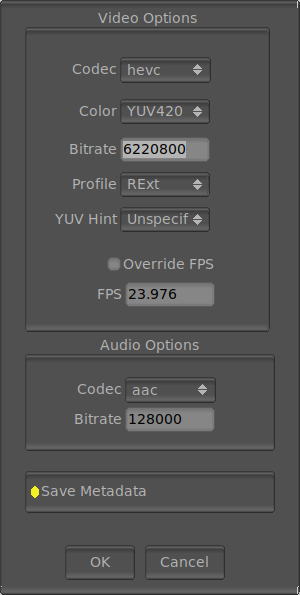

The File Save Movie Options

The File Save Movie options allows you to select options of how mrViewer saves the movie files. The window appears whenever you save a file with a movie extension (.mov, .avi, .wmv, etc).
The requester allows you to select the codec used. hevc is the best in terms of size and image quality, h264 is the most common these days and has similar benefit as hevc, mpeg4 is the one used for DVDs, and prores_ks is used for editing. Changing the codec will also change the Profile names the can be used.
The Color option allows you to select, based on the possibilities of the codec, how color is compressed as YUV. The eye is more forgiving of color information compared to lumma and this setting allows you to take advantage of that. YUV444 is the best, with no subsampling, just 3 bytes per pixel. YUV422 uses 4 bytes per 2 pixels and YUV420 uses 6 bytes per 4 pixels.
The Bitrate roughly controls the quality of the compression. You can calculate the bitrate by multiplying the resolution of the image times the channels and their byte size.
The Profile option allows you to select less codec options to make it compatible with the rest of your pipeline or hardware (some players will not play for example the High profile of some codecs).
Finally, the YUV Hint allows you to select how the YUV to RGB conversion is done for display. This effects the color display, without modifying the pixels saved and it is just a hint to the viewer or player. The default, Unspecified, is similar to what libSDL does with YUV images. BT709 is for HDTV simulation, BT470BG is for PAL and SMPTE170M is for NTSC. The other options remain unimplemented for now.
The audio options allows you to select the audio codec. Currently ac3, aac and mp3 are supported. ac3 and aac are the most common codecs to use providing good compression and excellent quality. mp3 is more common in compressing CDs.
The audio bitrate controls the quality of the audio. Lower values allow smaller file sizes, but more audio artifacts.